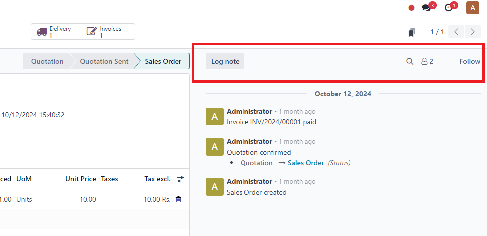
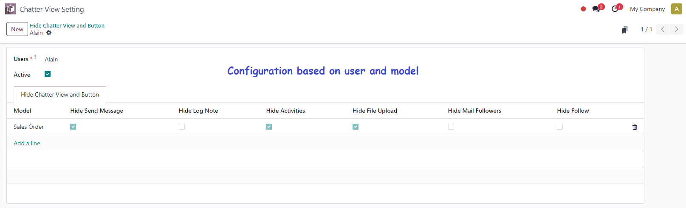

Enhance your Odoo mail chatter experience by dynamically controlling the visibility of key buttons based on user preferences.
With this app, administrators can configure visibility settings for the most commonly used buttons in the chatter interface, such as "Send Message", "Log Note", "Activities", and more. Tailor the interface to individual users or specific models, ensuring a streamlined, role-based user experience.

Once installed, this app allows administrators to configure the visibility of the chatter buttons for specific users and models.

softwarebox18@gmail.com